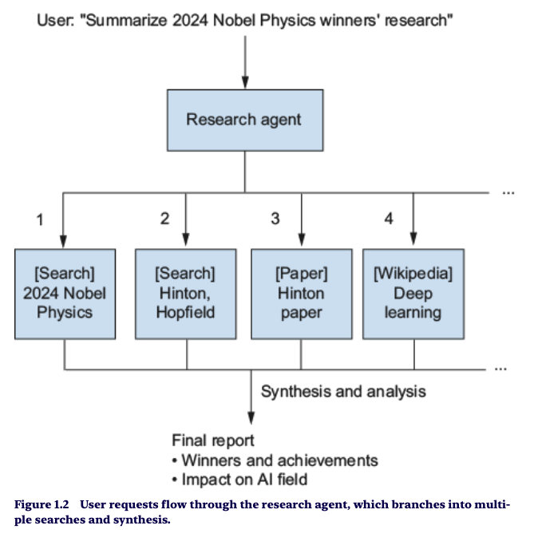
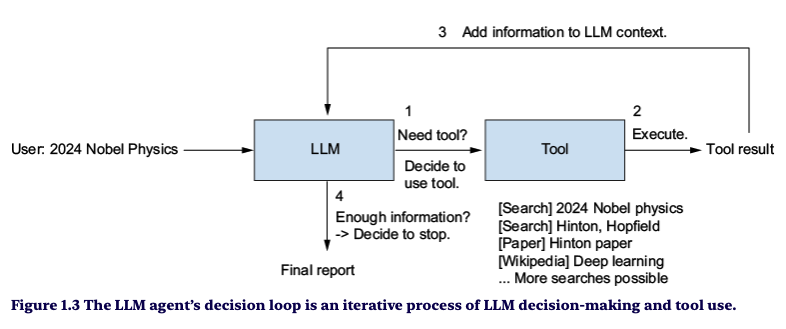

clique fora da imagem ou Esc para voltar
Como um modelo de linguagem passa a decidir, agir e repetir até atingir um objetivo
Um sistema que executa tarefas de forma autônoma, projetando o próprio fluxo de trabalho com as ferramentas disponíveis. Usa o LLM para compreender, decidir, resolver problemas, interagir com ambientes externos e executar ações.

Responde só com os dados de pré-treinamento. Conhecimento congelado na data do treino.
O mesmo LLM no núcleo, mas chamando tools no backend para obter dados e criar subtarefas.

Interpreta o contexto, compreende linguagem natural e toma decisões. Em vez de só gerar texto, analisa o cenário e decide dinamicamente quais passos seguir.
Altamente dinâmico: se a Ação 1 trouxer algo inesperado, muda de estratégia na Ação 2.
Lento e caro: espera cada ferramenta, faz muitas chamadas sequenciais e gasta mais tokens.
Mais rápido e barato: menos chamadas ao LLM e ferramentas em paralelo.
Menos flexível: se #E1 falhar ou mudar o rumo do problema, o plano pré-determinado pode falhar.
Padrões de comunicação entre agentes, e entre agentes e outros sistemas: definem sintaxe, estrutura e sequência das mensagens, os papéis de cada agente e quando e como responder.
agentes de origens diferentes conversam
no desenvolvimento de agentes
e integração mais fluida
Padrão aberto para comunicação entre agentes de IA, no modelo cliente-servidor, com um fluxo de três etapas.
{ "jsonrpc": "2.0", "id": 1,
"method": "message/send",
"params": { "message": { "role": "user",
"parts": [{ "text": "Analise a célula 101" }] } } }
HTTPS para a segurança da transmissão · JSON-RPC 2.0 como formato
Introduzido pela Anthropic, padroniza como modelos de IA obtêm o contexto necessário: APIs, bancos de dados, arquivos, buscas na web e outras fontes.
local, leve e síncrono
remoto, com streaming via SSE
Mensagens em JSON-RPC 2.0 nos dois transportes.
Ele é a camada que conecta as Ferramentas do sistema agêntico ao mundo externo. O A2A liga agentes entre si; o MCP liga cada agente às suas ferramentas.
A Anthropic doou o MCP à Agentic AI Foundation, um fundo da Linux Foundation. Em 2026 o A2A entrou na mesma fundação.
Detalhes na apresentação anterior: Tools, Resources, Prompts e o fluxo da célula 101.
Orquestração modular baseada em grafos direcionados: nós contêm lógica ou LLMs, arestas gerenciam o fluxo. Suporte nativo a fluxos assíncronos, ciclos e retentativas.
Exige lógica customizada para planejamento avançado e memória.
Sistemas robustos de agente único ou multiagentes leves, com controle de fluxo explícito e inspecionável.
Orquestração multiagente avançada, atribuição dinâmica de papéis e interação por troca de mensagens.
Pode ser complexo e pesado para casos de uso simples.
Diálogos complexos entre múltiplos agentes, como gerente-trabalhador e self-reflection.
Curva de aprendizado rápida, com abstrações intuitivas de “equipe” (crew) e “tarefas” (tasks).
Controle limitado sobre os mecanismos internos de orquestração.
Prototipagem rápida e agentes centrados em tarefas humanas, como assistentes e suporte.
Integração direta com o ecossistema OpenAI: chamadas de função seguras, primitivas de memória e roteamento de ferramentas.
Acoplado à infraestrutura da OpenAI, o que reduz a portabilidade para outras pilhas e modelos open source.
Equipes que operam só no ecossistema de APIs da OpenAI e querem implantação rápida.
Agente = LLM + ferramenta + loop. O LLM decide, as ferramentas agem e o loop repete até o objetivo.
ReAct ou ReWOO é uma escolha entre flexibilidade e custo: observar a cada passo ou planejar tudo antes.
Protocolos padronizam as conexões: MCP liga agente e ferramentas; A2A liga agentes entre si.
LLMs preveem · MCP conecta · Agentes decidem e agem
Obrigado! Perguntas?